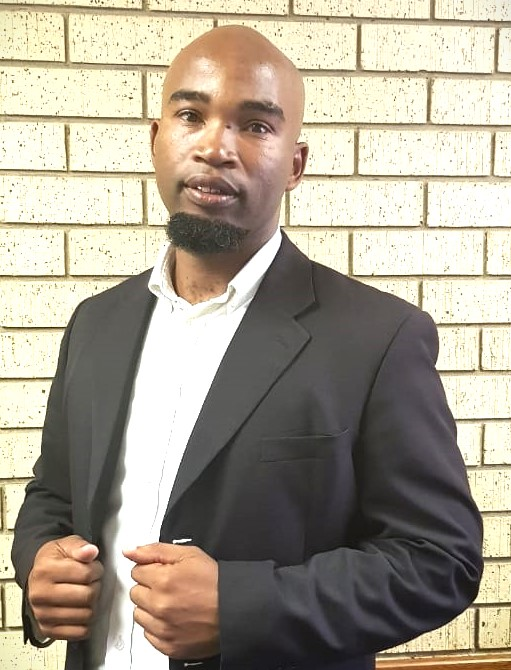

Don Mpangazitha | WDD 130
Hello! My name is Don Mpangazitha, and I am From South africa, Durban. I like hanging out with friends, playing soccer and so-on. I work as Artisan Bricklayer, for town-counsel in Dundee Municipality. I enrolled for Wed developer Program to improve my knowledge in technology. I love learning new things hence my passion for reading. My passion for hiking started when I was invited by a friend to go mountain-hiking with her and some other mutual friends. Going up was hard but by after the hike I was looking forward to doing it again and now I am always looking forward to more hiking trips. My greatest strength is determination. I believe with God I can do anything, as long as I put effort and my mind to what I am doing.